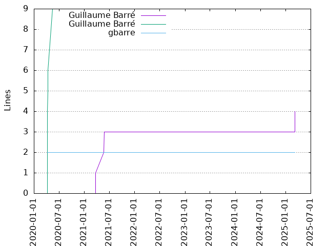
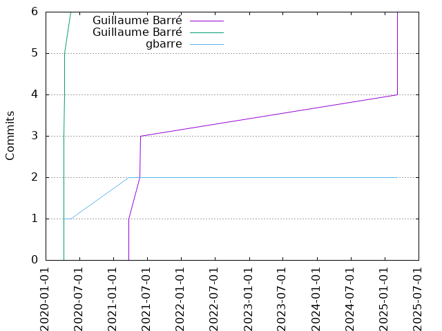

Authors
| Author | Commits (%) | + lines | - lines | First commit | Last commit | Age | Active days | # by commits |
|---|
| Guillaume Barré | 6 (42.86%) | 4 | 1 | 2021-03-23 | 2025-03-09 | 1447 days, 0:46:52 | 4 | 1 |
| Guillaume Barré | 6 (42.86%) | 9 | 2 | 2020-04-08 | 2020-05-15 | 37 days, 8:50:20 | 3 | 2 |
| gbarre | 2 (14.29%) | 2 | 0 | 2020-04-08 | 2021-03-23 | 349 days, 3:38:24 | 2 | 3 |


| Month | Author | Commits (%) | Next top 5 | Number of authors |
|---|
| 2025-03 | Guillaume Barré | 3 (100.00% of 3) | | 1 |
| 2021-05 | Guillaume Barré | 2 (100.00% of 2) | | 1 |
| 2021-03 | gbarre | 1 (50.00% of 2) | Guillaume Barré | 2 |
| 2020-05 | Guillaume Barré | 1 (100.00% of 1) | | 1 |
| 2020-04 | Guillaume Barré | 5 (83.33% of 6) | gbarre | 2 |
| Year | Author | Commits (%) | Next top 5 | Number of authors |
|---|
| 2025 | Guillaume Barré | 3 (100.00% of 3) | | 1 |
| 2021 | Guillaume Barré | 3 (75.00% of 4) | gbarre | 2 |
| 2020 | Guillaume Barré | 6 (85.71% of 7) | gbarre | 2 |
| Domains | Total (%) |
|---|
| ac-versailles.fr | 13 (92.86%) |
|---|
| users.noreply.github.com | 1 (7.14%) |
|---|